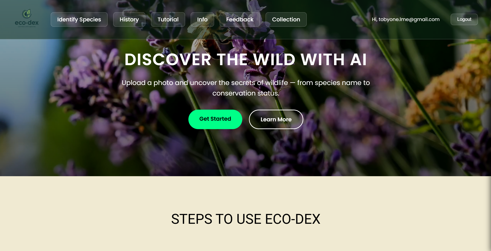
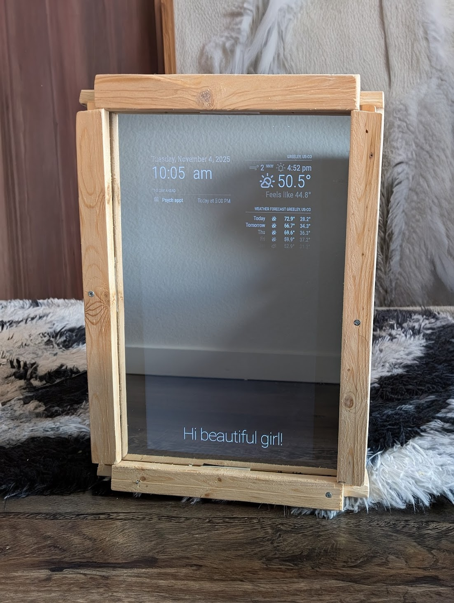
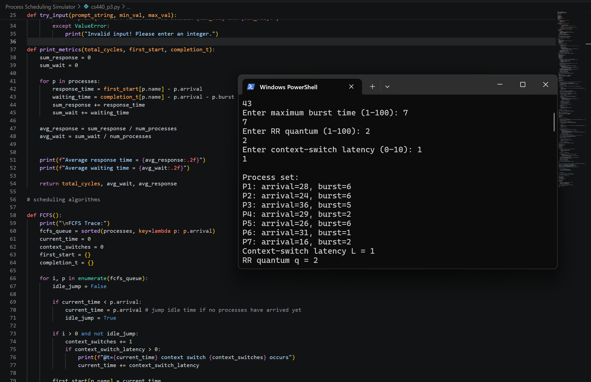
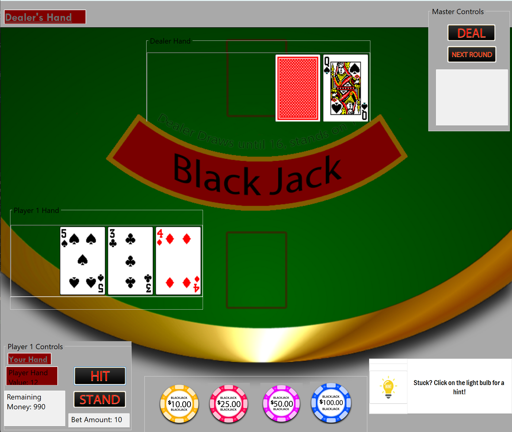

Hi, I'm Tobias DiRito
Full-Stack Software Engineer specializing in scalable web applications.
Discover
About Me
Hello! I'm Tobias, a software engineer and mathematician who finds as much joy in architecting low-level systems as I do in building seamless full-stack applications.
I recently graduated from the University of Northern Colorado with a Bachelor of Software Engineering and a minor in mathematics, a background that allows me to approach development with both technical rigor and analytical depth.
I am driven by the challenge of turning complex logic into tangible, user-centric solutions. When I'm not in front of a terminal, I'm likely catching a show at Red Rocks, exploring the mountains on a snowboard, or spending time with the people I love.
My Tech Stack
I have experience with a wide range of technologies. Here are some of my favorites:
Featured Projects
Here are a few things I've built recently, ranging from web apps to system simulations.

Eco-Dex (in progress)
As the Lead Backend/Full Stack Developer on this collaborative project, I developed a high-performance web application using Next.js and a companion mobile interface using React and Capacitor for real-time wildlife identification. Architected a unified Firebase backend to synchronize user data and identification history across web and mobile platforms, and integrated Google’s Gemini AI API to process image metadata, achieving automated classification of flora and fauna with detailed conservation insights.

Magic Mirror
A recreational solo project completed with the goal of integrating software into a more hands-on tangible product. This project is a mirror containing a sheet of two way mirror glass with a Raspberry Pi powered monitor behind displaying general information about the day. Utilizing weather and calendar APIs, it displays the essentials for getting ready for the day while being able to check yourself out before you leave!

OS Simulations
Implemented various programs to simulate the following OS concepts: CPU scheduling algorithms such as FCFS, SJF, and Round Robin to simulate kernel-level workloads, analyzed process turnaround times to optimize CPU utilization in a simulated environment, implemented process lifecycle simulations, and simulated thread creation and destruction using POSIX pthreads library.

Blackjack Simulator
Completed my sophomore year of college, this is a blackjack simulator completed solely in C#, using a Windows WinForms application for interaction.
Get In Touch
I'm currently open to new opportunities and collaborations. Whether you have a question, a project proposal, or just want to say hi, my inbox is always open.
Say Hello